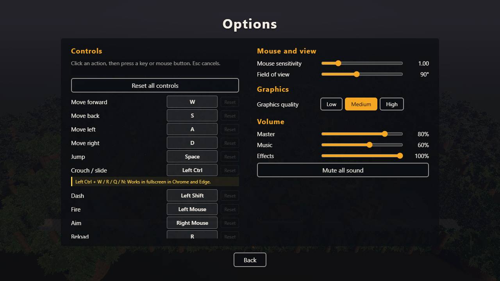

Options
Open Options from the main menu or from the pause menu. Changes apply at once and are saved in your browser, so they survive closing the tab.

What you can change
- Key bindings: click an action, then press the new key or mouse button. Esc cancels. Reset puts one action, or all of them, back to the default. A key already in use swaps with the action you are changing.
- Mouse: sensitivity, a separate multiplier while aiming, and invert Y.
- Crouch: hold or toggle.
- Field of view: wider shows more of the sides.
- Audio: master, effects and music volumes.
- Graphics quality: low, medium or high. Lower settings turn down shadows and effects for slower computers.
- Damage numbers: show or hide them.
Defaults
| Setting | Default / range |
|---|---|
| Mouse sensitivity | 1 (0.1 to 5) |
| Aim sensitivity multiplier | 1 |
| Invert Y | Off |
| Crouch | Hold |
| Field of view | 90° (75° to 110°) |
| Master / effects / music volume | 80% / 100% / 60% |
| Graphics quality | medium |
| Damage numbers | On |